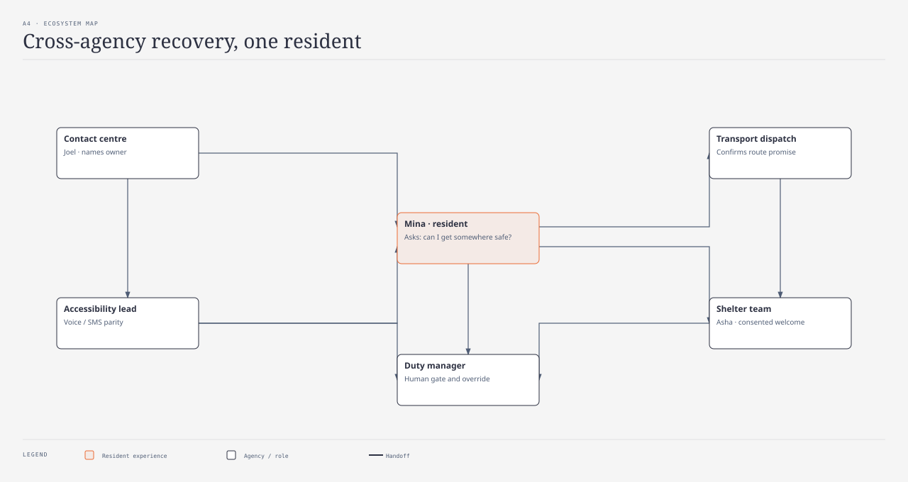

ecosystem-map · Elena · @sd-synthesizer · reconstructed / illustrative

| Actor | Gives | Receives |
|---|---|---|
| Resident | Consent, channel preference | One next action |
| Contact centre | Named owner, timestamp | Minimum case fields |
| Transport dispatch | Route promise | Shared case state |
| Shelter team | Welcome from consented card | Handoff without extra health data |
| Duty manager | Override / gate | Escalation visibility |